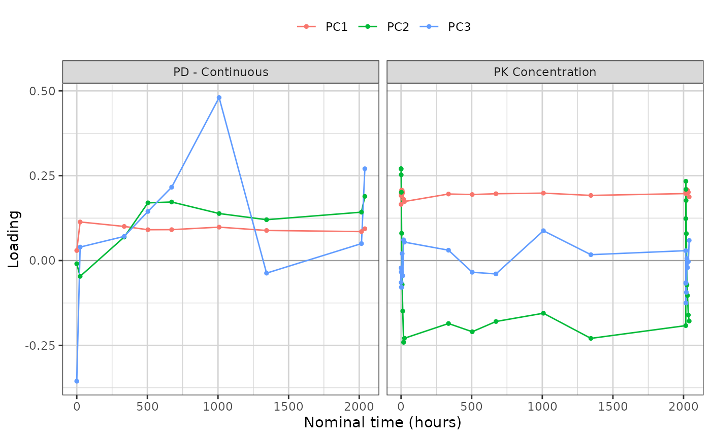
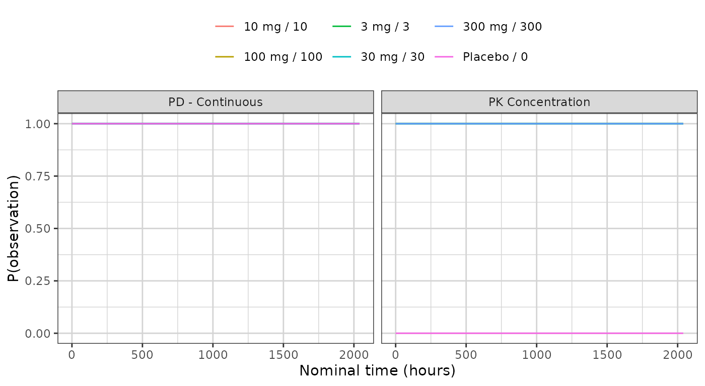

What a trial summary contains
Andrew Stein
Source:vignettes/pca-trial-summary.Rmd
pca-trial-summary.Rmdsynpmx_pca_summarize() returns a trial
summary: everything a synthetic copy of the study will be built
from, and nothing else. synpmx_pca_generate() reads that
object and no patient row, so what is listed here is the complete
account of what the generated dataset descends from.
This vignette walks through the object group by group. It is a
reference: read vignette("pca-demo") first for a run end to
end, and vignette("pca-algorithm") for how each quantity is
estimated and why.
The object is a plain list, and the names used below are its own, so a quantity can be reached directly when no accessor covers it.
The study
library(dplyr)
raw <- as.data.frame(get(utils::data(list = "case1_pkpd", package = "xgxr"))) |>
mutate(CENS = ifelse(NAME == "PD - Continuous", 0, CENS))
roles <- pmx_roles(
id = "ID",
time = "TIME",
dv = "LIDV",
cens = "CENS",
amt = "AMT",
evid = "EVID",
cmt = "CMT",
dvid = "NAME",
nominal_time = "NOMTIME",
strata = c("TRTACT", "DOSE"),
covariates = "WEIGHTB",
keep = "STUDY"
)
trial_summary <- synpmx_pca_summarize(raw, roles, seed = 808)
trial_summary
#> A trial summary, from synpmx_pca_summarize()
#>
#> fitted on 180 patients, 6 arm(s): Placebo / 0 (30), 3 mg / 3 (30), 10 mg / 10 (30), 30 mg / 30 (30), 100 mg / 100 (30), 300 mg / 300 (30)
#> endpoints PD - Continuous (9 visits modelled), PK Concentration (24 visits modelled)
#> covariates WEIGHTB
#> components 11 (91% of variance)
#> dose term factor
#> dosing 85 planned cycle(s) per arm | no reductions, interruptions or early stops
#>
#> synpmx_pca_generate() reads this object and nothing else. To look inside it:
#> pca_report() what it read out of the source data
#> pca_dosing() the planned dose schedule, per arm
#> pca_dose_rates() reduction, interruption and discontinuation
#> pca_visits() the probability of a visit, per arm
#> pca_components() the loadings, over timeThe inventory
pca_report() is the top-level account: one row per
released quantity, how many numbers it holds, and the smallest number of
patients standing behind any one of them.
show(as.data.frame(pca_report(trial_summary)),
"Every quantity read out of the source data")
pca_report(trial_summary)Every section below expands one of those rows.
The arms
Sizes are what the generated cohort is split by, in the same proportions.
data.frame(
arm = trial_summary$arms$arms,
patients = as.integer(trial_summary$arms$sizes[trial_summary$arms$arms])
)
#> arm patients
#> 1 Placebo\r0 30
#> 2 3 mg\r3 30
#> 3 10 mg\r10 30
#> 4 30 mg\r30 30
#> 5 100 mg\r100 30
#> 6 300 mg\r300 30The feature grid
Every column of the matrix the components are built on: one per
baseline covariate, and one per endpoint per retained nominal time.
patients is how many subjects hold an observation in that
cell, and cells held by fewer than min_column_patients were
dropped rather than modelled.
show(as.data.frame(pca_features(trial_summary)),
"Every feature, with its mean and standard deviation", paged = TRUE)center and scale are on the modelling
scale, which the transform column names: the log scale for
a positive endpoint, the original scale otherwise.
The endpoint transforms and assay limits
basis <- trial_summary$basis
digits3(data.frame(
endpoint = names(basis$transforms),
transform = vapply(basis$transforms, function(t) t$method, character(1)),
offset = signif(vapply(basis$transforms, function(t) t$offset, numeric(1)), 3),
lloq = vapply(trial_summary$schema$censoring, function(c) {
if (is.null(c$left)) NA_real_ else c$left
}, numeric(1)),
row.names = NULL
))
#> endpoint transform offset lloq
#> 1 PD - Continuous identity 0.000 NA
#> 2 PK Concentration log_offset 0.025 0.05The offset keeps log() finite near zero. The lower limit
of quantification is what a generated value below it is reported at,
with CENS set.
The components
pca_components() gives one loading per component and
retained cell. Plotted against time the components become curves: flat
and positive is overall magnitude, and crossing zero separates early
visits from late ones.
show(attr(pca_components(trial_summary), "variance_explained"),
"Variance explained, per component")
library(ggplot2)
library(xgxr)
xgx_theme_set()
components <- pca_components(trial_summary)
ggplot(subset(components, component %in% c("PC1", "PC2", "PC3") &
!is.na(time)),
aes(time, loading, colour = component)) +
geom_hline(yintercept = 0, linewidth = 0.3, colour = "grey60") +
geom_line() + geom_point(size = 1) +
facet_wrap(~endpoint, scales = "free_x") +
labs(x = "Nominal time (hours)", y = "Loading", colour = NULL) +
theme(legend.position = "top")
show(components, "Every loading, by component and feature", paged = TRUE)One matrix carries the covariates and every endpoint together, so a single draw keeps the relationships between them. The loading mass per component says where each one is concentrated:
mass <- tapply(
components$loading^2,
list(components$component,
ifelse(is.na(components$endpoint), "covariate", components$endpoint)),
sum
)
signif(mass[paste0("PC", seq_len(min(4, nrow(mass)))), , drop = FALSE], 3)
#> covariate PD - Continuous PK Concentration
#> PC1 0.000237 0.074 0.9260
#> PC2 0.001080 0.155 0.8430
#> PC3 0.411000 0.508 0.0813
#> PC4 0.063400 0.826 0.1110Each row sums to one. On this study the first two components are almost entirely the PK profile, and the covariate only enters further down — alongside the PD endpoint, which is the joint structure that a separate decomposition per endpoint would have thrown away.
The score model
A new subject’s scores are their arm’s mean plus a fresh draw whose spread is that arm’s residual standard deviation.
show(pca_scores(trial_summary),
"Mean score and residual spread, per arm and component", paged = TRUE)The sd column is the whole of the between-subject
variability the synthetic data will have. It differs by arm on purpose:
an arm sitting on the assay limit is genuinely tighter than one well
above it, and giving every arm the pooled spread would smear the low
arms upward.
The dosing model
pca_dosing() is the planned schedule each arm starts
from, and pca_dose_rates() is how its patients departed
from it.
show(head(pca_dosing(trial_summary), 12),
"The planned schedule, first cycles of each arm", paged = TRUE)
show(pca_dose_rates(trial_summary), "How patients departed from the plan")
pca_dose_rates(trial_summary)All three rates are zero here and every arm has a single dose level, so each generated patient receives the planned schedule exactly. On a study with dose modifications the rates are not zero, and generated patients then differ from one another as the source patients did.
The visit model
One probability per arm, endpoint and modelled time. Attendance is drawn independently per visit, so no real patient’s set of attended visits is reused.
ggplot(pca_visits(trial_summary), aes(time, probability, colour = arm)) +
geom_line() +
facet_wrap(~endpoint, scales = "free_x") +
labs(x = "Nominal time (hours)", y = "P(observation)", colour = NULL) +
theme(legend.position = "top")
show(pca_visits(trial_summary),
"Probability of an observation, per arm, endpoint and time", paged = TRUE)The schema
What the generated table needs in order to come back in the source’s shape. Column prototypes are zero-length vectors: they carry class and factor levels and no values.
schema <- trial_summary$schema
show(data.frame(
column = schema$columns,
class = vapply(schema$prototypes, function(p) class(p)[[1L]], character(1)),
levels = vapply(schema$prototypes, function(p) {
if (is.factor(p)) paste(levels(p), collapse = ", ") else ""
}, character(1))
), "Column order and type")Two entries are read from real values rather than averaged, and both are worth knowing about. Endpoint level sets: a discrete endpoint has no value between its levels, so a generated value is a source value.
data.frame(
endpoint = names(schema$endpoint_specs),
type = vapply(schema$endpoint_specs, function(s) s$type, character(1)),
levels = vapply(schema$endpoint_specs, function(s) {
if (is.null(s$levels)) "" else paste(s$levels, collapse = ", ")
}, character(1)),
reason = vapply(schema$endpoint_specs, function(s) s$reason, character(1)),
row.names = NULL
)
#> endpoint type levels reason
#> 1 PD - Continuous continuous not every observed value is a whole number
#> 2 PK Concentration continuous not every observed value is a whole numberArm constants: the strata and kept columns, one value per arm, carried verbatim onto every generated patient in it.
digits3(do.call(rbind, lapply(names(schema$arm_values), function(arm) {
values <- schema$arm_values[[arm]]
data.frame(arm = gsub("\r", " / ", arm, fixed = TRUE),
as.data.frame(values, stringsAsFactors = FALSE))
})))
#> arm TRTACT DOSE STUDY
#> 1 Placebo / 0 Placebo 0 1
#> 2 3 mg / 3 3 mg 3 1
#> 3 10 mg / 10 10 mg 10 1
#> 4 30 mg / 30 30 mg 30 1
#> 5 100 mg / 100 100 mg 100 1
#> 6 300 mg / 300 300 mg 300 1Subject identifiers are not in the schema. They are minted at generation, and the only thing kept about the source’s identifiers is the largest one, so a synthetic identifier cannot collide with a real one.
c(class = schema$id_class, offset = schema$id_offset)
#> class offset
#> "integer" "180"Generating from it
Nothing beyond the object above is read.
synthetic <- synpmx_pca_generate(trial_summary, seed = 808)
c(rows = nrow(synthetic),
subjects = length(unique(synthetic$ID)),
valid = validate_pmx(synthetic, roles)$valid)
#> rows subjects valid
#> 20520 180 1Where to go next
-
vignette("pca-demo")— one study end to end, with the source and synthetic data plotted against each other. -
vignette("pca-algorithm")— how each quantity above is estimated, and what it does and does not preserve.